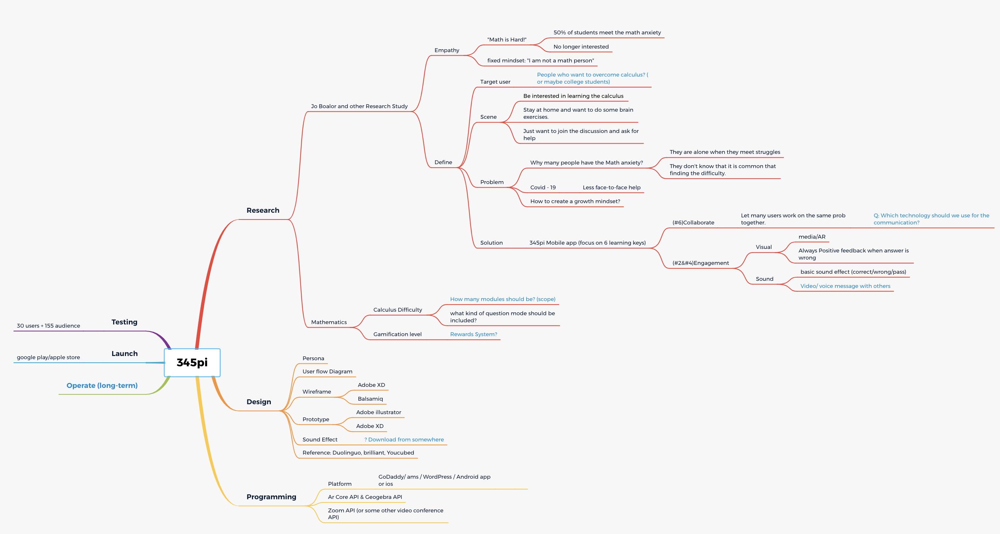
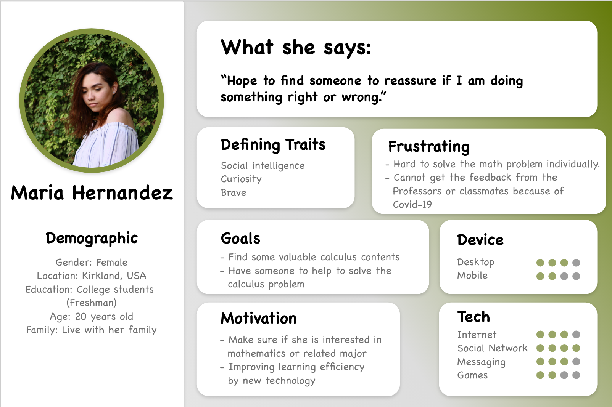
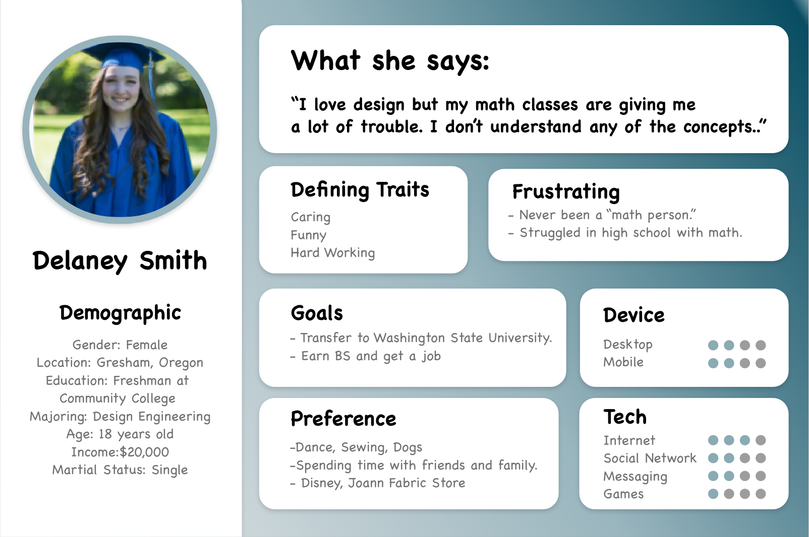
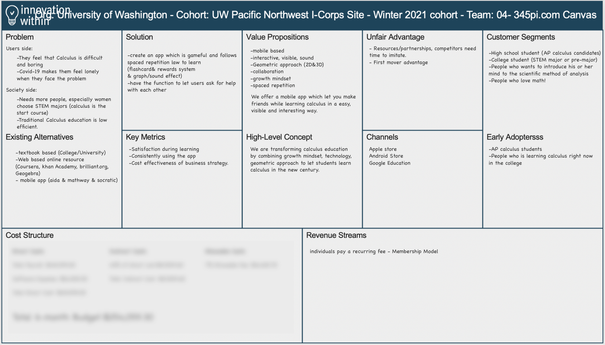
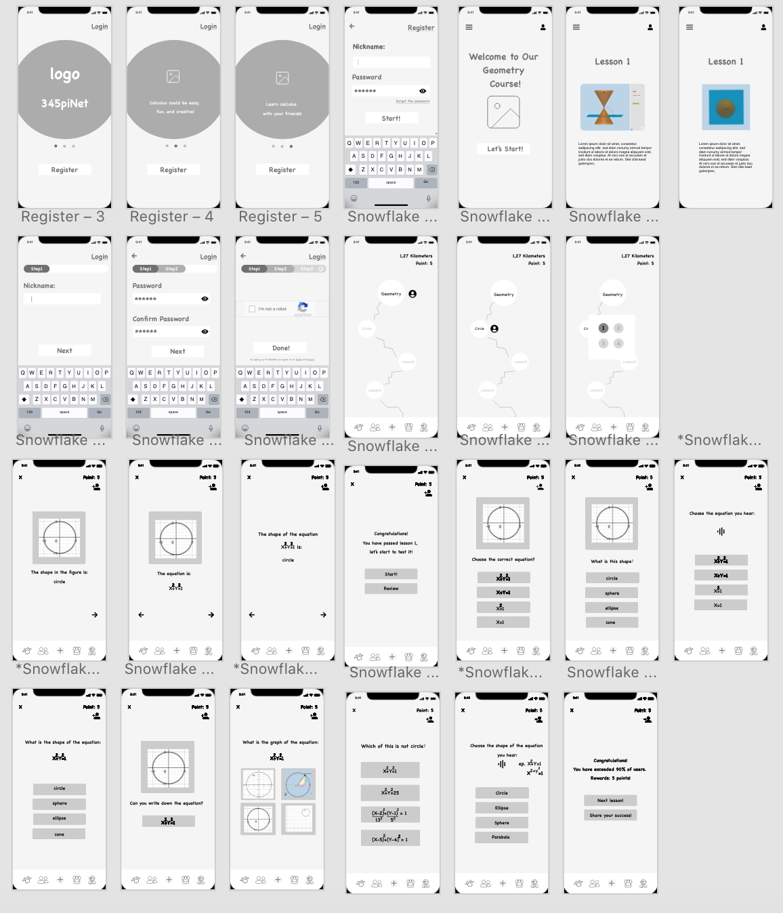

345PI
Overview
345PI aims to teach calculus to women and other minorities in a new way that focuses on visual pattern recognition (such as conic curves) and structure rather than memorizing Numbers and equations.
Role
Cofounder, UX designer
My responsibility:
Work: Project Pitch Deck, Persona, Research & Video Editing, Data Visualization, Wireframing, User Discovery
Resource: Google Workspace, Geogebra, html5/css, Adobe Suite
Project Process
Define Problems
Based on the data report from NSF in 2018, there are only 22% of female choose STEM major in the university. According to the user research, people who plan to choose STEM major often struggled from calculus. They said the calculus is difficult and boring.
Dr.Jo Boalder, the Stanford neuroscience and math education professor pointed out that the way to teached calculus now in the U.S. which based on algebra is wrong. People should learn calculus with a more visual, positive, and collaborative way (neuroscience-growth mindset).
Result
345PI is the idea from Dr.Jo Boaler's research and NSF's data. The goal of the app is to create a social learning student centric mobile app to address minority and women underrepresentation in Calculus graduation rates in the U.S.. The design idea would based on Dr. Jo Boaler's principle: vision, sound, geometry, and collaboration. Firstly, I need to collect and analyzing existing neuroscience research and competitive research to find out the value proposition value of 345PI. Then, I need to do interviews and user testing to prove our hypothesis. After that, the wireframe should be designed completely and the hi-fi prototype would be created and delivered to developers' team.
Research
Mind map

Neuroscience Research - The book "Limitless Mind" which is written by 345PI's advisor Dr. Jo Boaler pointed out that people limit themselves to be someone. A lot of U.S. white people rapidly give up when they face difficulties while learning calculus because they think they are not the right person. However, Asian and Indian students prefer to collaborative with each other when they solve the homework or create the study group to preview and review the knowledge together.


Value proposition Canvas

I am honor to attend UW Comotion program as the 345PI Team member to explore the user discovery. Based on the math education and neuroscience research from our advisor, Dr.Jo Boalder, I created the valus proposition canvas draft (Cost structure is hidden).
- mobile first
- growth mindset
- spaced repetition
- 2D & 3D graph learning
- AR (Colloaboritive AR)
- Social Network
Concept wireframe (Part)
The wireframe I created focus on the following rule:
- simple
- tap based
- spaced repetition
- 2D & 3D graph learning
- Gamification

Moving Forward
345PI is following the timeline, right now our team is doing the user testing！